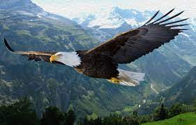
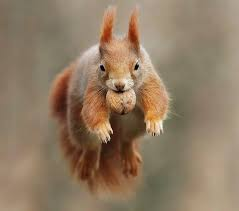
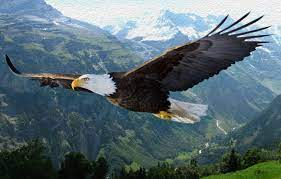
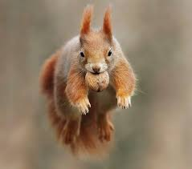

"Tabiatda va odam hayotida hayvonlar katta ahamiyatga ega. Hayvonlar—barcha ekosistemalarda oziqlanish zanjirining asosiy tarkibiy qismi. Hayvonlar o`simliklar bilan oziqlanib, o`zlashtirgan moddalarining yana tuproqqa qaytarilishiga, binobarin o`simliklarning o`sishiga imkon beradi. O`simlik va hayvonlar qoldig`i bilan oziqlanadigan hayvonlar Yer yuzini organik qoldiqlardan tozalab, tabiiy sanitarlik vazifasini bajaradi. Yirtqich hayvonlar tabiatda zararkunanda hayvonlarning sonini cheklab turishga yordam beradi. Hayvonlar odam hayotida ham katta ahamiyatga ega. Ulardan bir qancha turlari ovlanadi; uy hayvonlari go`sht, sut, jun, teri va boshqa qishloq xo`jaligi mahsulotlari olish maqsadida va transport vositasi sifatida boqiladi. Hayvonlar orasida qishloq xo`jaligi, odam va hayvonlarga ziyon keltiradigan parazit turlari ham ko`p. Odam faoliyatining tabiatga ta`siri tobora kuchayib borishi bir xil turlar sonining keskin qisqarib ketishiga olib keldi. Ayrim ma`lumotlarga ko`ra hozirgi davrda har kuni hayvonlarning bitta turi yo`qolib bormoqda. Hayvonlarni muhofaza qilish va ulardan foydalanish maqsadida deyarli barcha mamlakatlarda qonunlar qabul qilingan; maxsus qo`riqxonalar tashkil etilgan. O`zbekiston Respublikasi Qizil kitobiga 184 hayvon turi kiritilgan."
 


